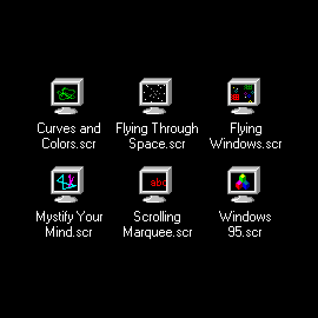
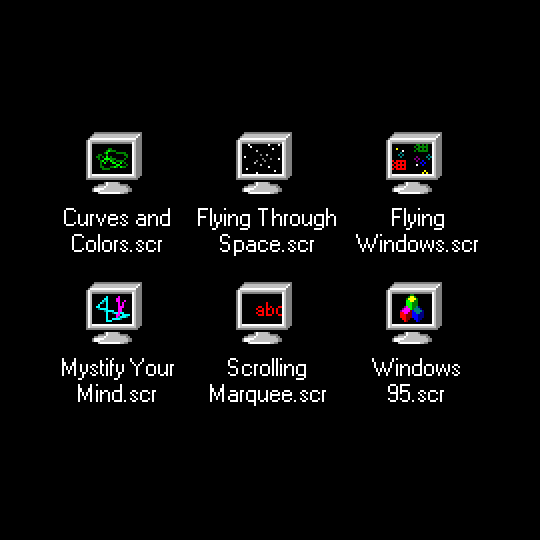
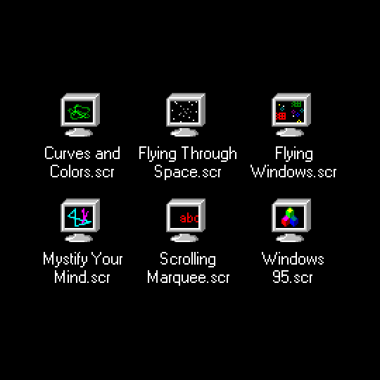
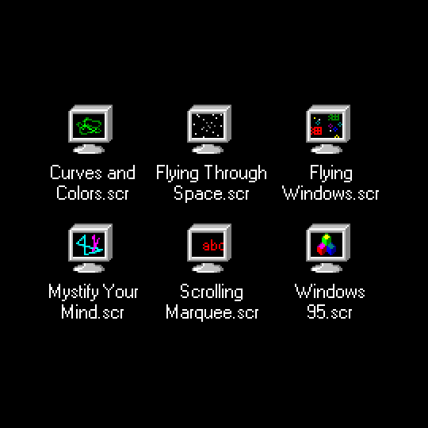

_ Twitter.png)


![12 Of The Best Apple Print Ads Of All Time [Gallery]](images/atulvinayak/Sys2/407083253825354252_12 Of The Best Apple Print Ads Of All Time [Gallery].jpg)


 _ Twitter.png)


 


 
